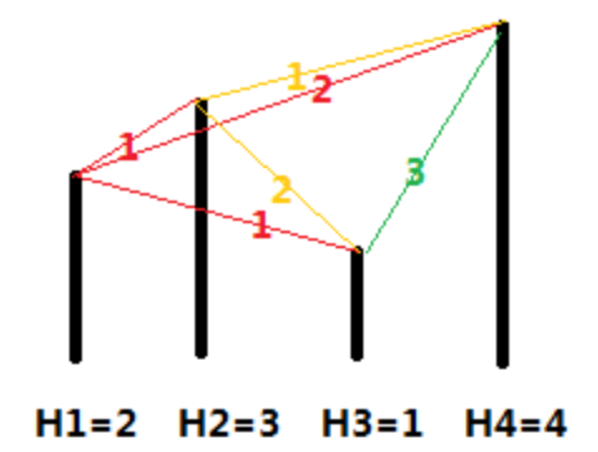

第一行包含一个整数 $N$，表示城市的数目。
第二行有 $N$ 个整数，每两个整数之间用一个空格隔开，依次表示城市 $1$ 到城市 $N4 的海拔高度，即 $H_1，H_2，......，H_n$，且每个 $H_i$ 都是不同的。
第三行包含一个整数 $X_0$。
第四行为一个整数 $M$，表示给定 $M$ 组 $S_i$ 和 $X_i$。
接下来的 $M$ 行，每行包含 $2$ 个整数 $S_i$ 和 $X_i$，表示从城市 $S_i$ 出发，最多行驶 $X_i$ 公里。
 Comet OJ
Comet OJ
小 A 和小 B 决定利用假期外出旅行，他们将想去的城市从 $1$ 到 $N$ 编号，且编号较小的城市在编号较大的城市的西边，已知各个城市的海拔高度互不相同，记城市 $i$的海拔高度为 $H_i$，城市 $i$ 和城市 $j$ 之间的距离 $d[i,j]$ 恰好是这两个城市海拔高度之差的绝对值，即 $d[i,j]=|𝐻_𝑖−𝐻_𝑗|$。
旅行过程中，小 A 和小 B 轮流开车，第一天小 A 开车，之后每天轮换一次。他们计划选择一个城市 $S$ 作为起点，一直向东行驶，并且最多行驶 $X$ 公里就结束旅行。小 A 和小 B 的驾驶风格不同，小 B 总是沿着前进方向选择一个最近的城市作为目的地，而小 A 总是沿着前进方向选择第二近的城市作为目的地（注意：本题中如果当前城市到两个城市的距离相同，则认为离海拔低的那个城市更近）。如果其中任何一人无法按照自己的原则选择目的城市，或者到达目的地会使行驶的总距离超出 $X$ 公里，他们就会结束旅行。
在启程之前，小 A 想知道两个问题：
第一行包含一个整数 $N$，表示城市的数目。
第二行有 $N$ 个整数，每两个整数之间用一个空格隔开，依次表示城市 $1$ 到城市 $N4 的海拔高度，即 $H_1，H_2，......，H_n$，且每个 $H_i$ 都是不同的。
第三行包含一个整数 $X_0$。
第四行为一个整数 $M$，表示给定 $M$ 组 $S_i$ 和 $X_i$。
接下来的 $M$ 行，每行包含 $2$ 个整数 $S_i$ 和 $X_i$，表示从城市 $S_i$ 出发，最多行驶 $X_i$ 公里。
输出共 $M+1$ 行。
第一行包含一个整数 $S_0$，表示对于给定的 $X_0$，从编号为 $S_0$ 的城市出发，小 A 开车行驶的路程总数与小 B 行驶的路程总数的比值最小。
接下来的 $M$ 行，每行包含 $2$ 个整数，之间用一个空格隔开，依次表示在给定的 $S_i$ 和 $X_i$ 下小 A 行驶的里程总数和小 B 行驶的里程总数。
4
2 3 1 4
3
4
1 3
2 3
3 3
4 31
1 1
2 0
0 0
0 010
4 5 6 1 2 3 7 8 9 10
7
10
1 7
2 7
3 7
4 7
5 7
6 7
7 7
8 7
9 7
10 72
3 2
2 4
2 1
2 4
5 1
5 1
2 1
2 0
0 0
0 0【样例 1 说明】

各个城市的海拔高度以及两个城市间的距离如上图所示。
如果从城市 $1$ 出发，可以到达的城市为 $2,3,4$，这几个城市与城市 $1$ 的距离分别为 $1,1,2$，但是由于城市 $3$ 的海拔高度低于城市 $2$，所以我们认为城市 $3$ 离城市 $1$ 最近，城市 $2$ 离城市 $1$ 第二近，所以小 A 会走到城市 $2$。到达城市 $2$ 后，前面可以到达的城市为 $3,4$，这两个城市与城市 $2$ 的距离分别为 $2,1$，所以城市 $4$ 离城市 $2$ 最近，因此小 B 会走到城市 $4$。到达城市 $4$ 后，前面已没有可到达的城市，所以旅行结束。
如果从城市 $2$ 出发，可以到达的城市为 $3,4$，这两个城市与城市 $2$ 的距离分别为 $2,1$，由于城市 $3$ 离城市 $2$ 第二近，所以小 A 会走到城市 $3$。到达城市 $3$ 后，前面尚未旅行的城市为 $4$，所以城市 $4$ 离城市 $3$ 最近，但是如果要到达城市 $4$，则总路程为 $2+3=5>3$，所以小 B 会直接在城市 $3$ 结束旅行。
如果从城市 $3$ 出发，可以到达的城市为 $4$，由于没有离城市 $3$ 第二近的城市，因此旅行还未开始就结束了。
如果从城市 $4$ 出发，没有可以到达的城市，因此旅行还未开始就结束了。
【样例 2 说明】
当 $X=7$ 时，
如果从城市 $1$ 出发，则路线为 1 -> 2 -> 3 -> 8 -> 9，小 A 走的距离为 $1+2=3$，小 B 走的距离为 $1+1=2$。（在城市 $1$ 时，距离小 A 最近的城市是 $2$ 和 $64，但是城市 $2$ 的海拔更高，视为与城市 $14 第二近的城市，所以小 A 最终选择城市 $24；走到 $94 后，小 A 只有城市 $10$ 可以走，没有第二选择可以选，所以没法做出选择，结束旅行）
如果从城市 $2$ 出发，则路线为 2-> 6 ->7，小 A 和小 B 走的距离分别为 $2$，$4$。
如果从城市 $3$ 出发，则路线为 3 -> 8 -> 9，小 A 和小 B 走的距离分别为 $2$，$1$。
如果从城市 $4$ 出发，则路线为 4 -> 6 -> 7，小 A 和小 B 走的距离分别为 $2$，$4$。
如果从城市 $5$ 出发，则路线为 5 -> 7 -> 8，小 A 和小 B 走的距离分别为 $5$，$1$。
如果从城市 $6$ 出发，则路线为 6 -> 8 -> 9，小 A 和小 B 走的距离分别为 $5$，$1$。
如果从城市 $7$ 出发，则路线为 7 -> 9 -> 10，小 A 和小 B 走的距离分别为 $2$，$1$。
如果从城市 $8$ 出发，则路线为 8 -> 10，小 A 和小 B 走的距离分别为 $2$，$0$。
如果从城市 $9$ 出发，则路线为 9，小 A 和小 B 走的距离分别为 $0$，$0$（旅行一开始就结束了）。
如果从城市 $10$ 出发，则路线为 10，小 A 和小 B 走的距离分别为 $0$，$0$。
从城市 $2$ 或者城市 $4$ 出发小 A 行驶的路程总数与小 B 行驶的路程总数的比值都最小，但是城市 $2$ 的海拔更高，所以输出第一行为 $2$。
【数据范围】
对于30%的数据，有 $1≤N≤20，1≤M≤20$；
对于40%的数据，有 $1≤N≤100，1≤M≤100$；
对于50%的数据，有 $1≤N≤100，1≤M≤1,000$；
对于70%的数据，有 $1≤N≤1,000，1≤M≤10,000$；
对于100%的数据，有 $1≤N≤100,0001≤M≤10,000$，$-1,000,000,000≤H_i≤1,000,000,000$，$0≤X_0≤1,000,000,000$，$1≤S_i≤N，0≤X_i≤1,000,000,000$，数据保证 $H_i$ 互不相同。